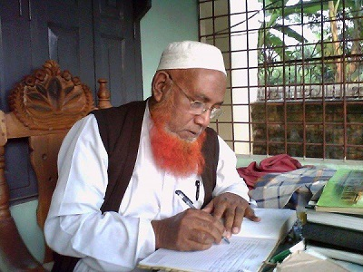

একটি জাতির সুন্দর ও সমৃদ্ধ ভবিষ্যৎ রচনায় প্রধান উপায় হলো শিক্ষা। শিক্ষার আলোর স্পর্শে একজন ব্যক্তি পূর্ণাঙ্গ মানুষ হিসাবে গড়ে ওঠে । এক্ষেত্রে প্রতিষ্ঠানের গুরুত্ব সর্বাধিক। অর্ধশতকেরও বেশি সময় ধরে ভিকারুননিসা নূন স্কুল ও কলেজ বাংলাদেশের নারী শিক্ষার অগ্রগতি, আদর্শ এবং দক্ষতার ক্ষেত্রে নিষ্ঠার সাথে অগ্রণী ভূমিকা পালন করে আসছে। এই প্রতিষ্ঠানের ছাত্রীদের সৃজনশীলতা ও মেধার পরিচয় ক্রমাগত দেশ বিদেশে ছড়িয়ে পড়ছে । শুধু পুঁথিগত শিক্ষা নয় বিজ্ঞান, বিতর্ক, সঙ্গীত, নাট্যকলা, খেলাধুলা, চিত্রাংকন এবং সাহিত্যের বিভিন্ন শাখায় এ প্রতিষ্ঠানের ছাত্রীরা সর্বাগ্রে সমাসীন। তথ্য প্রযুক্তির ক্ষেত্রে সৃষ্টিশীলতা সম্ভাবনার ক্ষেত্র সৃষ্টির জন্য 'ভিকারুননিসা নূন স্কুল ও কলেজ এর ওয়েবসাইট' একটি সমৃদ্ধ সংযোজন।ওয়েবসাইট প্রকাশ উপলক্ষে অধ্যক্ষ, সকল শিক্ষক, ছাত্রী, কর্মচারী এবং এই প্রযুক্তির সাথে সংশ্লিষ্ট সবাইকে আমার আন্তরিক অভিনন্দন ও শুভেচ্ছা জানাচ্ছি। তথ্য প্রযুক্তি বিকাশের ক্ষেত্রে উক্ত ওয়েবসাইটটি একটি মডেল হিসেবে বিবেচিত হোক এই প্রত্যাশা করছি।
১৯৮০ সালের পর ফলাফলে এবং ১৯৯০ সালের পর অবকাঠামোগত উন্নয়নে ইতিবাচক পরিবর্তন আসে। প্রাথমিক ও নিম্ন মাধ্যমিক পরীক্ষায় ট্যালেন্টপুল ও সাধারন গ্রেডে বৃত্তি লাভ এবং মাধ্যমিক পরীক্ষায় মেধা তালিকায় স্হান লাভের মধ্য দিয়ে ফলাফলে স্হান করে নিই আমরা। ততদিনে দক্ষিন-পূর্ব কোন থেকে একতলা দোতলা-তিনতলা করে ভবন উঠতে শুরো করেছে। এলো ১৯৯৬। তৎকালীন ঢাকা ১১ আসনে জাতীয় সংসদ সদস্য নির্বাচিত হন কামাল আহমেদ মজুমদার, দায়িত্ব গ্রহণ করেন স্কুল ম্যানেজিং কমিটির সভাপতি। ঝড়ো গতিতে অবকাঠামোর উন্নয়ন ঘটতে থাকে। নির্মিত হয় মূল-বালক ক্যাম্পাস, রূপনগর আবাসিক এলাকায় সরকারের শিক্ষা সম্প্রসারণ আওতায় প্রতিষ্ঠিত হয় ব্রাঞ্চ-১।
এবারকার অর্ধবার্ষিক পরীক্ষার আগে প্রায় ৩০ হাজার শিক্ষার্থীর ছবিযুক্ত প্রবেশপত্র এবং পাঠোন্নতিপত্র প্রদান করা হয়েছে। এ কাজের জন্য সকল শিক্ষার্থীর ডাটাবেজ তৈরি করা হয়েছে। সর্বোচ্চ ১০/১৫ সেকেন্ডের মেধ্যে শিক্ষার্থী/অভিভাবকগণ বেতনাদি পরিশোধ করতে পারেন। অনুষ্ঠানের আমান্ত্রণ, শিক্ষার্থীর উপস্থিতি-অনুপস্থিতির খতিয়ান, ফলাফল, পাওনাদির বিবরণ এস.এম.এস এর মাধ্যমে সংশ্লিষ্ট সম্মানিত অভিভাবকবৃন্দের কাছে পৌঁছানোর সু-ব্যবস্থা রয়েছে। এ ছারাও রয়েছে ডিজিটাল ক্লাশের ব্যবস্থা যেখানে শিক্ষার্থীরা উৎফুল্ল হয়ে অধির আগ্রহে পড়ালেখার উৎসাহ এবং পাঠ্যবইয়ের যেকোনো সমস্যার সমাধান অভিজ্ঞ শিক্ষক-শিক্ষিকাদের মাধ্যমে তৎক্ষনাত সহজ ভাবে পেয়ে থাকে।
প্রতিষ্ঠাকাল থেকে প্রতিষ্ঠানটির অগ্রযাত্রায় বিভিন্ন পর্বে ম্যানেজিং কমিটিতে যাঁরা দায়িত্ব পালন করেছেন, তাঁদের সবার প্রতি, সহকর্মীদের ভেতরে যারা অবসরে গেছেন, তাদের প্রতি এবং বর্ষে বর্ষে যারা ‘কলতান’ সম্পাদনা করেছেন, তাদের সবার প্রতি আমার গভীর শ্রদ্ধা ও কৃতজ্ঞতা প্রকাশ করছি। ইতোমধ্য ম্যানেজিং কমিটি, সহকর্মীবৃন্দের এবং শিক্ষার্থীবৃন্দের ভেতরে যারা আমাদের ছেড়ে চলে গেছেন পড়পারে, তাদের বিদেহী আত্নার প্রতিও আমি বিনম্র শ্রদ্ধা জ্ঞাপন করছি।
চতুর্দশ সংখ্যা থেকে পঞ্চদশ সংখ্যা ‘কলতান’ এর দূরত্ব বেশ। তাও সমৃদ্ধ ও মানসম্পন্ন আকারে বেরোচ্ছে ‘কলতান’। গভনিং বডির মাননীয় সভাপতিসহ সম্মানিতসদস্যবৃন্দ, সহকর্মী শিক্ষক-শিক্ষিকাবৃন্দ, সম্পাদনা পরিষদের সবাইকে জানাই আন্তরিক ধন্যবাদ।
আল্লাহ্ হাফেজ।
আলহাজ আব্দুল মান্নান
অধ্যক্ষ
যাদুখালী হাই স্কুল